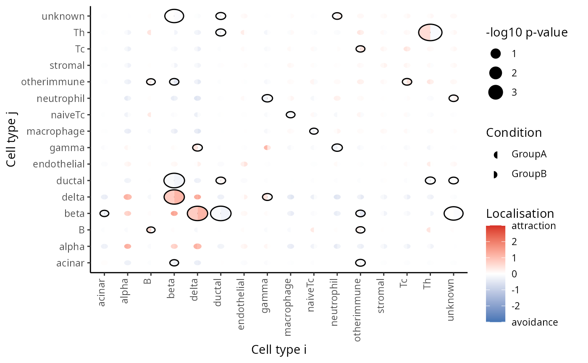

Spatial Mixed-Effects Modelling with spicy
Nicolas Canete
Westmead Institute for Medical Research, University of Sydney, Australianicolas.canete@sydney.edu.au
Ellis Patrick
Westmead Institute for Medical Research, University of Sydney, AustraliaSchool of Mathematics and Statistics, University of Sydney, Australia14 November 2022
Source:vignettes/spicyR.Rmd
spicyR.RmdInstallation
if (!require("BiocManager"))
install.packages("BiocManager")
BiocManager::install("spicyR")Overview
This guide will provide a step-by-step guide on how mixed effects models can be applied to multiple segmented and labelled images to identify how the localisation of different cell types can change across different conditions. Here, the subject is modelled as a random effect, and the different conditions are modelled as a fixed effect.
Example data
Here, we use a subset of the Damond et al 2019 imaging mass cytometry dataset. We will compare the spatial distributions of cells in the pancreatic islets of individuals with early onset diabetes and healthy controls.
diabetesData is a SegmentedCells object
containing single-cell data of 160 images from 8 subjects, with 20
images per subjects.
cellSummary() returns a DataFrame object
providing the location (x and y) and cell type
(cellType) of each cell and the image it belongs to
(imageID).
imagePheno() returns a tibble object
providing the corresponding subject (subject) and condition
(condition) for each image.
data("diabetesData")
diabetesData
#> A SegmentedCells object with...
#> Number of images:120
#> Number of cells:253777
#> Number of cell types: 16 [ ductal, acinar, ..., beta ]
#> Number of intensities: 0 [ ]
#> Number of morphologies: 0 [ ]
#> Number of image phenotypes: 6 [ imageID, case, ..., stage ]
cellSummary(diabetesData)
#> DataFrame with 253777 rows and 6 columns
#> imageID cellID imageCellID x y cellType
#> <factor> <character> <character> <numeric> <numeric> <factor>
#> 1 P15 cell_1101219 P15_1 219 2 ductal
#> 2 P15 cell_1101220 P15_2 277 0 acinar
#> 3 P15 cell_1101221 P15_3 22 0 ductal
#> 4 P15 cell_1101222 P15_4 30 6 ductal
#> 5 P15 cell_1101223 P15_5 105 0 acinar
#> ... ... ... ... ... ... ...
#> 253773 D25 cell_295062 D25_1016 304 322 ductal
#> 253774 D25 cell_295063 D25_1017 230 325 ductal
#> 253775 D25 cell_295064 D25_1018 328 325 acinar
#> 253776 D25 cell_295065 D25_1019 94 325 Tc
#> 253777 D25 cell_295066 D25_1020 268 325 acinar
imagePheno(diabetesData)
#> DataFrame with 120 rows and 6 columns
#> imageID case slide part group stage
#> <factor> <integer> <character> <character> <integer> <factor>
#> 1 P15 6089 P Tail 3 Long-duration
#> 2 Q06 6089 Q Body 3 Long-duration
#> 3 Q20 6089 Q Body 3 Long-duration
#> 4 P36 6089 P Tail 3 Long-duration
#> 5 P34 6089 P Tail 3 Long-duration
#> ... ... ... ... ... ... ...
#> 116 D03 6418 D Body 1 Long-duration
#> 117 C13 6418 C Tail 1 Long-duration
#> 118 D11 6418 D Body 1 Long-duration
#> 119 D06 6418 D Body 1 Long-duration
#> 120 D25 6418 D Body 1 Long-durationIn this data set, cell types include immune cell types (B cells, naive T cells, T Helper cells, T cytotoxic cells, neutrophils, macrophages) and pancreatic islet cells (alpha, beta, gamma, delta).
Mixed Effects Modelling
To investigate changes in colocalisation between two different cell
types, we measure the level of colocalisation between two cell types by
modelling with the Lcross() function in the
spatstat.explore package. Specifically, the mean difference
between the obtained function and the theoretical function is used as a
measure for the level of colocalisation. Differences of this statistic
between two conditions is modelled using a weighted mixed effects model,
with condition as the fixed effect and subject as the random effect.
spicyTestBootstrap ## Testing for change in colocalisation for a
specific pair of cells
Firstly, we can see whether one cell type tends to be around another
cell type in one condition compared to the other. This can be done using
the spicy() function, where we include
condition, and subject. In this example, we
want to see whether or not Delta cells (to) tend to be
found around Beta cells (from) in onset diabetes images
compared to non-diabetic images.
spicyTestPair <- spicy(diabetesData,
condition = "stage",
subject = "case",
from = "beta",
to = "delta")
topPairs(spicyTestPair)
#> intercept coefficient p.value adj.pvalue from to
#> beta__delta 179.729 -58.24478 0.000109702 0.000109702 beta deltaWe obtain a spicy object which details the results of
the mixed effects modelling performed. As the coefficient
in spicyTest is positive, we find that Th cells cells are
more likely to be found around beta cells in the onset diabetes group
compared to the non-diabetic control.
Test for change in colocalisation for all pairwise cell combinations
Here, we can perform what we did above for all pairwise combinations
of cell types by excluding the from and to
parameters from spicy().
spicyTest <- spicy(diabetesData,
condition = "stage",
subject = "case")
data("spicyTest")
spicyTest
#>
#> Number of cell type pairs: 256
#> Number of differentially localised cell type pairs:
#> conditionOnset conditionLong-duration
#> 7 7
topPairs(spicyTest)
#> intercept coefficient p.value adj.pvalue from
#> Th_Th -8.550349 55.505421 0.0002069040 0.03207907 Th
#> beta_ductal -19.461966 10.416870 0.0005559049 0.03207907 beta
#> ductal_beta -19.407845 10.382899 0.0005695262 0.03207907 ductal
#> delta_beta 101.111037 -30.418789 0.0006118914 0.03207907 delta
#> beta_delta 101.052488 -30.370186 0.0006265444 0.03207907 beta
#> unknown_beta -6.704261 8.546938 0.0010115597 0.03891502 unknown
#> beta_unknown -6.686305 8.505666 0.0010640825 0.03891502 beta
#> gamma_neutrophil -3.234976 -19.102452 0.0229478395 0.39078920 gamma
#> neutrophil_gamma -3.228265 -19.065803 0.0230795918 0.39078920 neutrophil
#> ductal_Th -1.454500 -10.508455 0.0268678016 0.39078920 ductal
#> to
#> Th_Th Th
#> beta_ductal ductal
#> ductal_beta beta
#> delta_beta beta
#> beta_delta delta
#> unknown_beta beta
#> beta_unknown unknown
#> gamma_neutrophil neutrophil
#> neutrophil_gamma gamma
#> ductal_Th ThAgain, we obtain a spicy object which outlines the
result of the mixed effects models performed for each pairwise
combination if cell types.
We can represent this as a heatmap using the
spatialMEMMultiPlot() function by providing it the
spicy object obtained.
signifPlot(spicyTest,
breaks=c(-3, 3, 1),
marksToPlot = c("alpha", "beta", "gamma", "delta",
"B", "naiveTc", "Th", "Tc", "neutrophil", "macrophage"))
sessionInfo()
sessionInfo()
#> R version 4.2.2 (2022-10-31)
#> Platform: x86_64-pc-linux-gnu (64-bit)
#> Running under: EndeavourOS
#>
#> Matrix products: default
#> BLAS: /usr/lib/libblas.so.3.11.0
#> LAPACK: /usr/lib/liblapack.so.3.11.0
#>
#> locale:
#> [1] LC_CTYPE=en_AU.UTF-8 LC_NUMERIC=C
#> [3] LC_TIME=en_AU.UTF-8 LC_COLLATE=en_AU.UTF-8
#> [5] LC_MONETARY=en_AU.UTF-8 LC_MESSAGES=en_AU.UTF-8
#> [7] LC_PAPER=en_AU.UTF-8 LC_NAME=C
#> [9] LC_ADDRESS=C LC_TELEPHONE=C
#> [11] LC_MEASUREMENT=en_AU.UTF-8 LC_IDENTIFICATION=C
#>
#> attached base packages:
#> [1] stats graphics grDevices utils datasets methods base
#>
#> other attached packages:
#> [1] ggplot2_3.4.0 spicyR_1.11.1 BiocStyle_2.26.0
#>
#> loaded via a namespace (and not attached):
#> [1] SpatialExperiment_1.8.0 minqa_1.2.5
#> [3] colorspace_2.0-3 deldir_1.0-6
#> [5] rjson_0.2.21 ellipsis_0.3.2
#> [7] rprojroot_2.0.3 scuttle_1.8.0
#> [9] XVector_0.38.0 GenomicRanges_1.50.1
#> [11] fs_1.5.2 spatstat.data_3.0-0
#> [13] farver_2.1.1 fansi_1.0.3
#> [15] codetools_0.2-18 splines_4.2.2
#> [17] R.methodsS3_1.8.2 sparseMatrixStats_1.10.0
#> [19] cachem_1.0.6 knitr_1.40
#> [21] polyclip_1.10-4 jsonlite_1.8.3
#> [23] nloptr_2.0.3 R.oo_1.25.0
#> [25] pheatmap_1.0.12 spatstat.sparse_3.0-0
#> [27] ggforce_0.4.1 HDF5Array_1.26.0
#> [29] BiocManager_1.30.19 compiler_4.2.2
#> [31] dqrng_0.3.0 assertthat_0.2.1
#> [33] Matrix_1.5-3 fastmap_1.1.0
#> [35] limma_3.54.0 cli_3.4.1
#> [37] tweenr_2.0.2 htmltools_0.5.3
#> [39] tools_4.2.2 lmerTest_3.1-3
#> [41] gtable_0.3.1 glue_1.6.2
#> [43] GenomeInfoDbData_1.2.9 dplyr_1.0.10
#> [45] Rcpp_1.0.9 Biobase_2.58.0
#> [47] jquerylib_0.1.4 pkgdown_2.0.6
#> [49] vctrs_0.5.0 rhdf5filters_1.10.0
#> [51] spatstat.explore_3.0-5 nlme_3.1-160
#> [53] DelayedMatrixStats_1.20.0 spatstat.random_3.0-1
#> [55] xfun_0.34 stringr_1.4.1
#> [57] beachmat_2.14.0 lme4_1.1-31
#> [59] lifecycle_1.0.3 goftest_1.2-3
#> [61] scam_1.2-13 edgeR_3.40.0
#> [63] zlibbioc_1.44.0 MASS_7.3-58.1
#> [65] scales_1.2.1 ragg_1.2.4
#> [67] MatrixGenerics_1.10.0 spatstat.utils_3.0-1
#> [69] parallel_4.2.2 SummarizedExperiment_1.28.0
#> [71] rhdf5_2.42.0 RColorBrewer_1.1-3
#> [73] SingleCellExperiment_1.20.0 yaml_2.3.6
#> [75] memoise_2.0.1 sass_0.4.2
#> [77] stringi_1.7.8 highr_0.9
#> [79] S4Vectors_0.36.0 desc_1.4.2
#> [81] BiocGenerics_0.44.0 boot_1.3-28
#> [83] BiocParallel_1.32.1 GenomeInfoDb_1.34.2
#> [85] rlang_1.0.6 pkgconfig_2.0.3
#> [87] systemfonts_1.0.4 matrixStats_0.62.0
#> [89] bitops_1.0-7 evaluate_0.18
#> [91] lattice_0.20-45 tensor_1.5
#> [93] purrr_0.3.5 Rhdf5lib_1.20.0
#> [95] labeling_0.4.2 tidyselect_1.2.0
#> [97] magrittr_2.0.3 bookdown_0.30
#> [99] R6_2.5.1 IRanges_2.32.0
#> [101] magick_2.7.3 generics_0.1.3
#> [103] DelayedArray_0.24.0 DBI_1.1.3
#> [105] pillar_1.8.1 withr_2.5.0
#> [107] mgcv_1.8-41 abind_1.4-5
#> [109] RCurl_1.98-1.9 tibble_3.1.8
#> [111] DropletUtils_1.18.0 utf8_1.2.2
#> [113] spatstat.geom_3.0-3 rmarkdown_2.18
#> [115] locfit_1.5-9.6 grid_4.2.2
#> [117] data.table_1.14.4 digest_0.6.30
#> [119] tidyr_1.2.1 numDeriv_2016.8-1.1
#> [121] R.utils_2.12.2 textshaping_0.3.6
#> [123] stats4_4.2.2 munsell_0.5.0
#> [125] concaveman_1.1.0 bslib_0.4.1